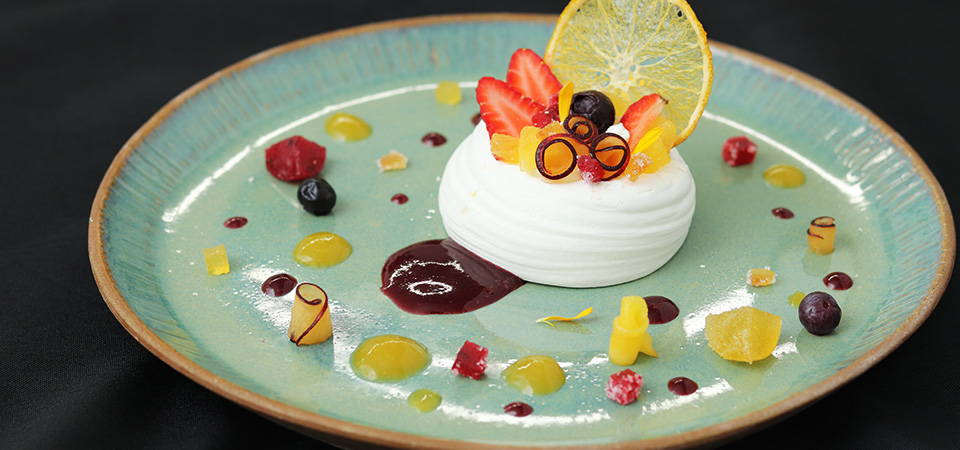
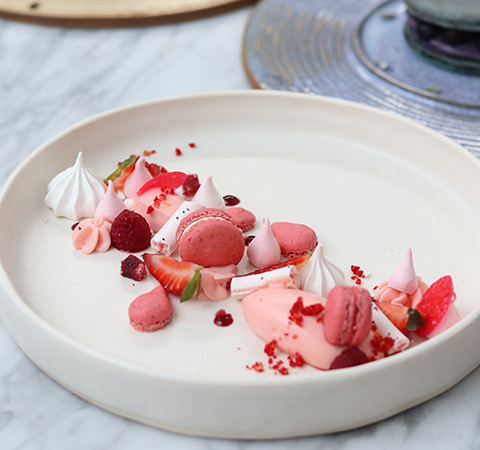
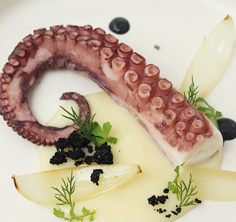
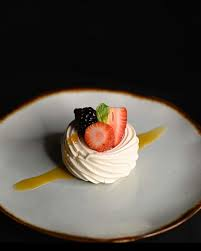
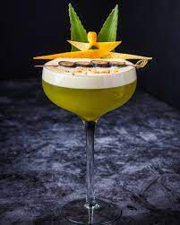

Nuestra materia prima es meticulosamente seleccionada.
Luego pasa por procesos de elaboración artesanales y creativos con recetas propias con nuestra cocina de última tecnología.
Los menúes se renuevan constantemente, brindando platos innovadores, resaltando los sabores franceses y acompañando las tendencias de la gastronomía mundial.
Utilizando ingredientes frescos obtenemos los mejores resultados.
Todo el menú esta empapado por la creatividad de Remy quien fue reconocido como Marca País.




